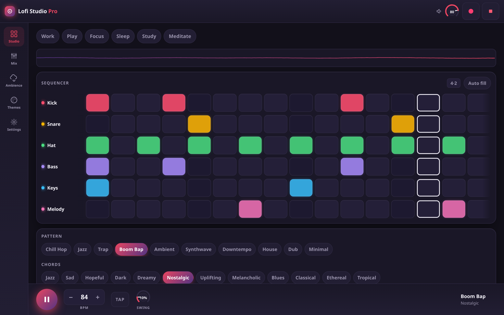
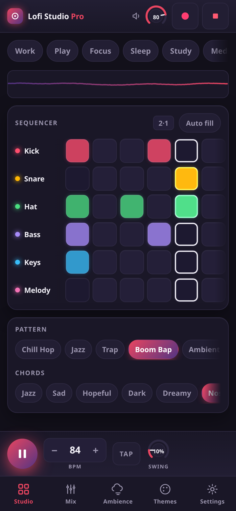

Six tracks, sixteen steps, nine ambience layers and a live tape chain — every sound synthesised in your browser. No login, no library, no “start a project”. One screen, one sound, immediately.

No plugin browser, no piano roll, no onboarding tour. The controls you need to turn a pattern into a mood, and a panic button for when it goes wrong.
Kick, snare, hat, bass, keys and melody. Ten patterns and twelve four-bar chord progressions to start from, or tap your own.
Low-pass, saturation, vinyl crackle, reverb, chorus and wow-and-flutter — six knobs that turn clean into cassette.
Rain, fireplace, cafe, wind, birds, thunder, ocean, night and vinyl. Mix them under the beat, or on their own with the drums stopped.
Chain four two-bar slots into something longer, and give any step a 75, 50 or 25 percent chance of firing so the loop stops repeating itself.
From a near-black studio to paper-white daytime. One attribute swap, no reload, no flash.
Hit record and get a file, or export four bars as MIDI — drums on channel 10, parts on their own channels — and open it in a DAW.
Add it to your home screen and it opens full-screen, from cache, with the aeroplane mode still on.
The whole instrument — including the audio library — is precached on your first visit. After that, the network is somebody else's problem.

One HTML file, five plain scripts, one vendored library. No framework, no bundler, no dependency tree to keep patched.
“Every sound is synthesised in the browser. That is not a technical detail — it is the reason the whole thing fits on one screen and opens in a second.”